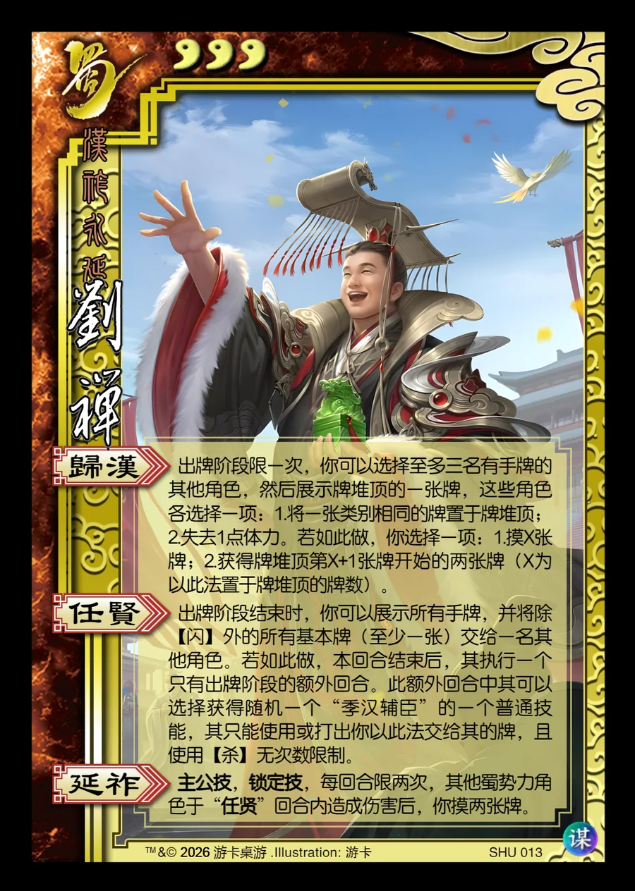

点击卡面查看大图
蜀
谋刘禅
♥3汉祚永延
归汉
出牌阶段限一次，你可以选择至多三名有手牌的其他角色，然后展示牌堆顶的一张牌，这些角色各选择一项：1.将一张类别相同的牌置于牌堆顶；2.失去1点体力。若如此做，你选择一项：1.摸X张牌；2.获得牌堆顶第X+1张牌开始的两张牌（X为以此法置于牌堆顶的牌数）。
任贤▶ 模拟器
出牌阶段结束时，你可以展示所有手牌，并将除【闪】外的所有基本牌（至少一张）交给一名其他角色。若如此做，本回合结束后，其执行一个只有出牌阶段的额外回合。此额外回合中其可以选择获得随机一个“季汉辅臣”的一个普通技能，其只能使用或打出虚拟牌或你以此法交给其的牌，且使用【杀】无次数限制。
延祚主公技锁定技
主公技，锁定技，每回合限两次，其他蜀势力角色于“任贤”回合内造成伤害后，你摸两张牌。